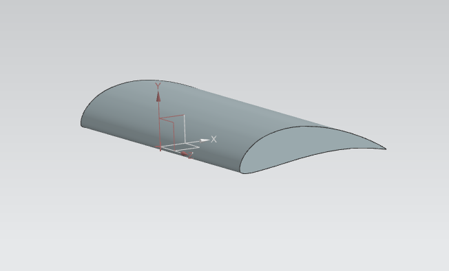
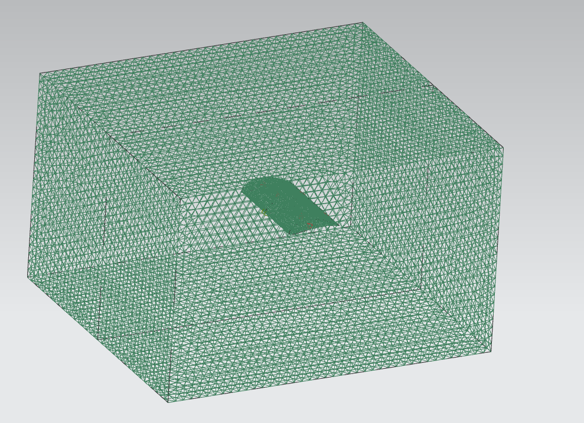
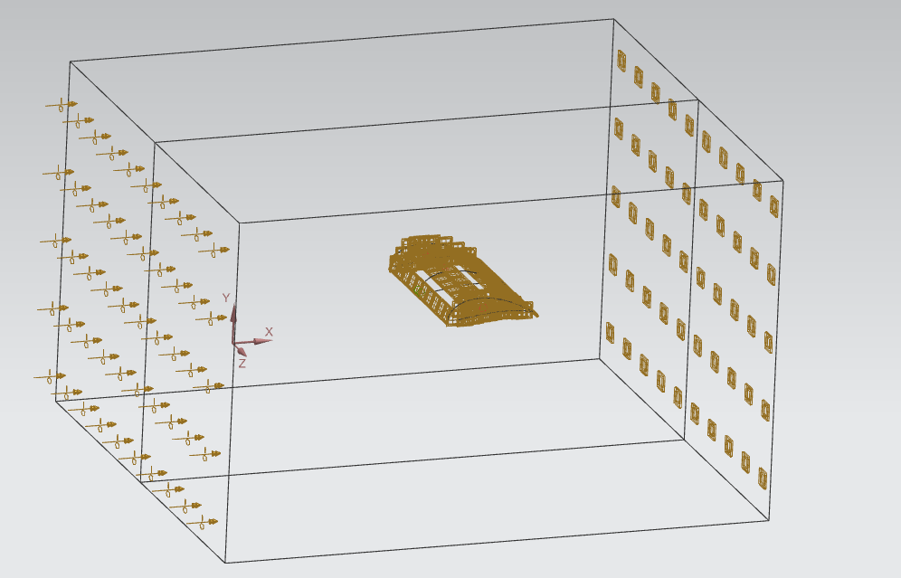
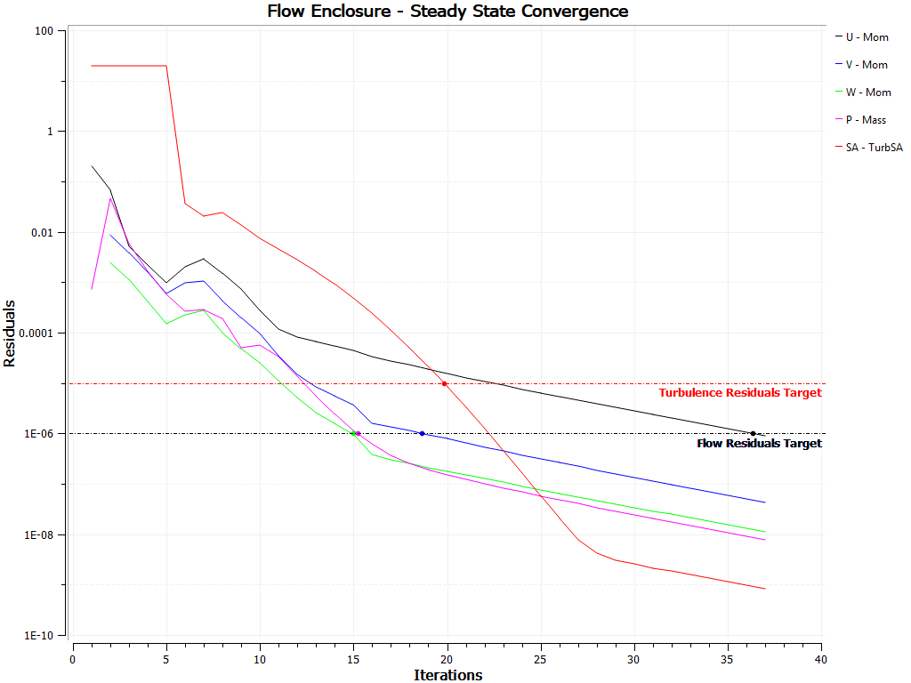
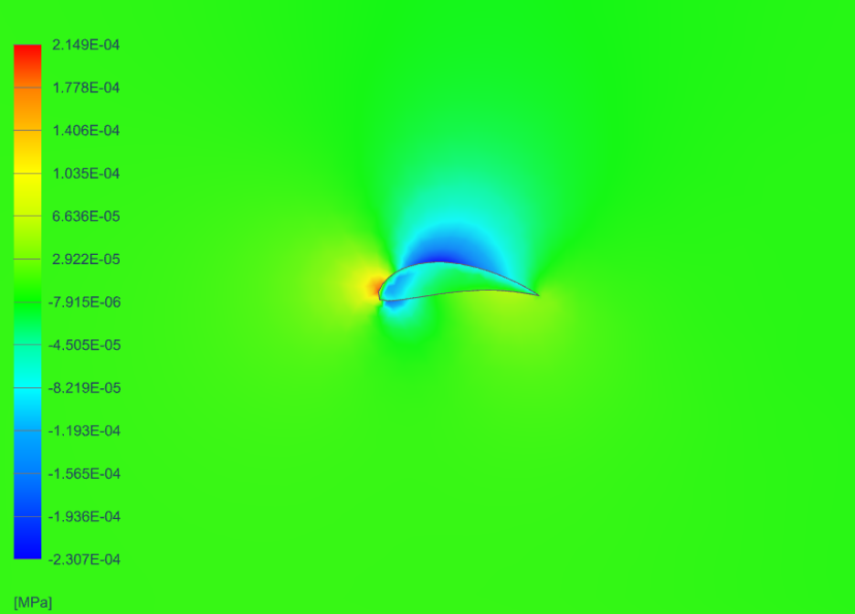
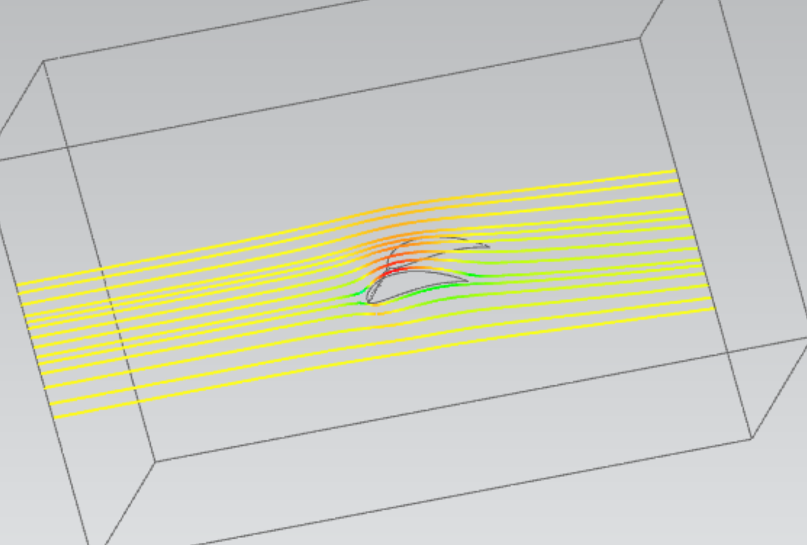

Project Objective
- Evaluate the aerodynamic performance of an airfoil in a wind tunnel using CFD.
Methods
- Developed a CFD model in Siemens NX to simulate airflow over the airfoil in a wind tunnel.
- Geometry: modeled the airfoil and a wind-tunnel enclosure around it, with the enclosure split in two for viewing results.
- Mesh: 15 mm elements in the enclosure, refined to 5 mm on the airfoil to resolve the flow near its surface.
- Boundary conditions: 18 m/s velocity inlet and an outlet at the opposite end of the tunnel, with a lift/drag report on the airfoil surface.
- Solution: steady-state, with the Spalart–Allmaras turbulence model; velocity and turbulence residuals converged toward the 10−6 target in under 40 iterations.




Results
- Analyzed drag force, velocity, pressure and streamlines to evaluate aerodynamic performance.
- Total drag force: 703 mN (0.703 N) at an 18 m/s inlet velocity.
- Flow stagnates at the leading edge and accelerates over the upper surface to a peak of about 23.4 m/s. Static pressure ranges from +215 Pa at the leading-edge stagnation point to −231 Pa over the upper surface, the pressure difference that produces lift.

